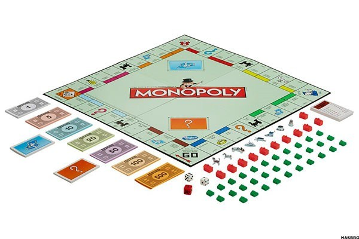

Using Science to be a Winner: From Bingo to Monopoly
Let’s face facts, none of us enjoy losing. Whether you are prone to flipping the board during a
game of chess or known to lose your cool after becoming bankrupt when playing monopoly, we all
have a secret desire to win and be successful no matter what we attempt in life. There is a
difference between wanting to win and knowing how to, however, as while the former is driven by
ambition the latter requires skill, strategy and an eye for details. Interestingly, science can
play a pivotal role in enabling you to win almost every conceivable form of game, from classic
casino disciplines to your favourite board games.

Numeracy and Strategy: The Importance of Science and Mathematics
Let’s take Monopoly as an example, as first glance this would seem like the last game that could
be mastered using a scientific approach and fundamental mathematical principles. To the majority
of players, the Monopoly Board is viewed as an infinite loop, where chance and the roll of the dice
determines exactly where you land. While there is some truth to this, Business Insider reporter
Walter Hickey claims that players are far more likely to land on some spaces on others and this
should form the basis of their strategy. So instead of targeting the highest value properties,
players should invest in those that experience the most traffic.
So which properties are these? Essentially, they are on the squares located between the Jail and
Go to Jail, and this assumption works on basic probability and mathematics. After all, the jail
is known to suck in players from all over the board, through the Go to Jail Square, Chance cards
and Community Chest, and over the course of the game you are likely to spend several stints
behind bars. This instantly makes the properties beyond this point more viable and potentially
lucrative to players with a desire to win.